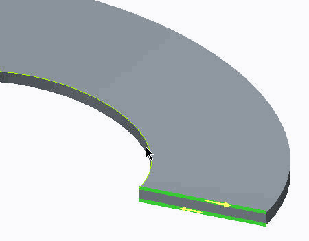

练习: 了解非线性稳定性分析
目标
成功完成此练习后，您将能够：
- 执行非线性稳定性分析。
假定背景
在本练习中，您将检查 Creo Simulate 如何处理大变形分析中的特殊情况。在本示例中，您将检查经历稳定性丢失的板簧的行为。Creo Simulate 为此类问题所使用的算法名为“弧长方法”，并且在本练习中用来求解结构的载荷-偏转曲线中具有导致不稳定性的部分负斜率的区域。
“关闭窗口”(Close Window) “拭除未显示的”(Erase Not Displayed)
“拭除未显示的”(Erase Not Displayed) 
 Simulate_Analysis\NLStability
Simulate_Analysis\NLStability
 CUP_SPRING_SIMULATE.PRT
CUP_SPRING_SIMULATE.PRT
|
|
||
 |
Creo Parametric 用户打开 CUP_SPRING.PRT。 | |
|
|
||
-
任务 1. 定义 2D 轴对称模型类型。
1. 在功能区中，选择“主页”(Home) 选项卡。
2. 单击“设置”(Set Up) 组中的“模型设置”(Model Setup) 。“模型设置”(Model Setup) 对话框随即出现。
3. 单击“高级”(Advanced)。
4. 在“类型”(Type) 部分中，选择“2D 轴对称”(2D Axisymmetric)。
5. 单击“坐标系”(Coordinate System) 字段。在模型中，选择 PRT_CSYS_DEF。
6. 单击“几何”(Geometry) 字段。在模型中，选择显示的曲面。
7. 单击“确定”(OK)。
8. 在提示中单击“确认”(Confirm)。

-
任务 2. 定义模型的材料。
1. 在功能区中，选择“主页”(Home) 选项卡。
2. 在“材料”(Material) 组中单击“材料分配”(Material Assignment)
 。将出现“材料分配”(Material Assignment) 对话框。
。将出现“材料分配”(Material Assignment) 对话框。
3. 在模型中，选择在第一个任务中选定的曲面。
4. 在“属性”(Properties) 部分中，单击“更多”(More)。
5. 选择 steel.mtl 并将其添加到模型中。
6. 单击“确定”(OK) 以返回到“材料分配”(Material Assignment) 对话框。
7. 校验未选择任何“材料方向”(Material Orientation)。
8. 单击“确定”(OK)。
-
任务 3. 定义模型的载荷。
1. 在功能区中，选择“主页”(Home) 选项卡。
2. 在“载荷”(Loads) 组中单击“力/力矩载荷”(Force/Moment Load) 。将出现“力/力矩载荷”(Force/Moment Load) 对话框。
3. 从“参考”(References) 下拉菜单中选择“点”(Points)。
4. 在模型中，选择显示的点。
5. 在“力/力矩载荷”(Force/Moment Load) 对话框中“力”(Force) 部分的 Y 字段中键入 2500。
6. 单击“确定”(OK)。
-
任务 4. 在模型中定义约束。
1. 在功能区中，选择“主页”(Home) 选项卡。
2. 在“约束”(Constraints) 组中单击“位移”(Displacement)
 。将出现“约束”(Constraint) 对话框。
。将出现“约束”(Constraint) 对话框。
3. 从“参考”(References) 下拉菜单中选择“点”(Points)。
4. 在模型中，选择显示的点。
5. 在“约束”(Constraint) 对话框的“平移”(Translation) 部分中，针对 X 平移单击“自由平移”(Free Translation) 。
6. 单击“确定”(OK)。
-
任务 5. 创建网格控制并网格化模型。
1. 在功能区中，选择“精细模型”(Refine Model) 选项卡。
2. 在 AutoGEM 组中从“控制”(Controls) 下拉菜单中选择“边分布”(Edge Distribution) 。“边分布控制”(Edge Distribution Control) 对话框随即出现。
3. 在模型中，选择显示的边。
4. 在“边分布控制”(Edge Distribution Control) 对话框中“属性”(Properties) 部分的“节点数”(Number of Nodes) 字段中键入 4。
5. 单击“确定”(OK)。
6. 在功能区中，选择“精细模型”(Refine Model) 选项卡。
7. 从 AutoGEM 组中单击AutoGEM
 。将出现 AutoGEM 对话框。
。将出现 AutoGEM 对话框。
8. 单击“创建”(Create)。
9. 检查生成的网格。单击“关闭”(Close) 以关闭所有对话框。提示保存网格时单击“否”(No)。
-
任务 6. 在模型中创建测量。
1. 在功能区中，选择“主页”(Home) 选项卡。
2. 在“运行”(Run) 组中单击“测量”(Measures) 。将出现“测量”(Measures) 对话框。
3. 单击“新建”(New)。将出现“测量定义”(Measure Definition) 对话框。
4. 完成以下步骤：
- 在“名称”(Name) 字段中键入 reaction_force。
- 从“数量”(Quantity) 下拉菜单中选择“力”(Force)。
- 从“分量”(Component) 下拉菜单中选择 Y。
5. 在模型树中，展开载荷/约束和载荷集 ConstraintSet1。
6. 在“测量定义”(Measure Definition) 对话框的“空间评估”(Spatial Evaluation) 部分中，单击“选择参考”(Select Reference)
 ，然后在模型树中选择 Constraint1。
，然后在模型树中选择 Constraint1。
7. 在“测量定义”(Measure Definition) 对话框中，单击“确定”(OK) 以返回至“测量”(Measures) 对话框。
8. 单击“新建”(New)。将出现“测量定义”(Measure Definition) 对话框。
9. 完成以下步骤：
- 在“名称”(Name) 字段中键入 Force。
- 从“数量”(Quantity) 下拉菜单中选择“计算的测量”(Computed Measure)。
- 在“表达式”(Expression) 部分中键入 -reaction_force。
10. 在“测量定义”(Measure Definition) 对话框中，单击“确定”(OK) 以返回至“测量”(Measures) 对话框。
11. 单击“新建”(New)。将出现“测量定义”(Measure Definition) 对话框。
12. 完成以下步骤：
- 在“名称”(Name) 字段中键入 Deformation。
- 从“数量”(Quantity) 下拉菜单中选择“位移”(Displacement)。
- 从“分量”(Component) 下拉菜单中选择 Y。
13. 在“空间评估”(Spatial Evaluation) 部分中，从下拉菜单选择“在点处”(At Point)。
14. 单击“选择参考”(Select Reference)
并选择载荷施加处的点。
15. 在“测量定义”(Measure Definition) 对话框中，单击“确定”(OK) 以返回至“测量”(Measures) 对话框。
16. 单击“关闭”(Close)。
-
任务 7. 定义并运行静态分析。
1. 在功能区中，选择“主页”(Home) 选项卡。
2. 在“运行”(Run) 组中单击“分析和研究”(Analyses and Studies) 。将出现“分析和设计研究”(Analyses and Design Studies) 对话框。
3. 单击“文件”(File) > “新建静态分析”(New Static)。将出现“静态分析定义”(Static Analysis Definition) 对话框。
4. 完成以下步骤：
- 在“名称”(Name) 字段中键入 Cup_Spring。
- 选择“非线性/使用载荷历史”(Nonlinear/Use Load Histories)。
- 在“非线性选项”(Nonlinear Options) 部分，选择“计算大变形”(Calculate Large Deformations)。
- 选择显示在“约束集/元件”(Constraint Set/Component) 和“载荷集/元件”(Load Set/Component) 部分中的约束集和载荷集。
- 单击“收敛”(Convergence) 选项卡，然后从“方法”(Method) 下拉菜单中单击“单通道自适应”(Single-Pass Adaptive)。
- 选择“包括突弹跳变”(Include Snap-through)。
- 选择“输出”(Output) 选项卡。
- 在“计算”(Calculate) 部分中，选择“应力”(Stresses)、“旋转”(Rotations) 和“反作用”(Reactions)。
- 在“出图”(Plot) 部分的“绘制栅格”(Plotting Grid) 字段中键入 10。
- 在“输出步长”(Output Steps) 部分中，从下拉菜单选择“用户定义的步长”(User-defined Steps)。
- 在“主步长数”(Number of Master Steps) 字段中键入 21。按 ENTER 键。
5. 单击“确定”(OK) 返回到“分析和设计研究”(Analyses and Design Studies) 对话框。
6. 单击“配置运行设置”(Configure Run Settings)
 。将出现“运行设置”(Run Settings) 对话框。
。将出现“运行设置”(Run Settings) 对话框。
7. 默认情况下，结果和临时输出目录被设置在工作目录中。两种分析都储存在此位置。单击“确定”(OK)。
8. 在“分析和设计研究”(Analyses and Design Studies) 对话框中选择 Cup_Spring，然后单击“开始运行”(Start Run)
 。单击“是”(Yes) 以运行交互诊断。
。单击“是”(Yes) 以运行交互诊断。
9. 分析完成后，单击“显示研究状况”(Display Study Status)
 查看汇总报告。请注意，在汇总文件中正在报告突弹跳变的起点和终点检测。继续在整个汇总报告文件中监视这些报告。
查看汇总报告。请注意，在汇总文件中正在报告突弹跳变的起点和终点检测。继续在整个汇总报告文件中监视这些报告。
10. 关闭所有对话框并返回到 Creo Simulate 窗口。
-
任务 8. 创建结果窗口并检查结果。
1. 在“分析和设计研究”(Analyses and Design Studies) 窗口中选择 Cup_Spring。
2. 单击“审阅结果”(Review Results)
 。将出现“结果窗口定义”(Result Window Definition) 对话框。
。将出现“结果窗口定义”(Result Window Definition) 对话框。
3. 从“显示类型”(Display Type) 下拉菜单中选择“图形”(Graph)。
4. 选择“数量”(Quantity) 选项卡。
5. 从“图形纵坐标 (竖直) 轴”(Graph Ordinate (Vertical) Axis) 下拉菜单中选择“测量”(Measure)。
6. 单击“测量”(Measures)
 。将出现“测量”(Measures) 对话框。
。将出现“测量”(Measures) 对话框。
7. 从“用户定义”(User-Defined) 列中选择“力”(Force)。
8. 单击“确定”(OK) 返回到“结果窗口定义”(Result Window Definition) 对话框。
9. 从“图形横坐标 (水平) 轴”(Graph Abscissa (Horizontal)) 的次级下拉菜单中选择 “测量”(Measure)。
10. 单击“测量”(Measures)
。将出现“测量”(Measures) 对话框。
11. 从“用户定义”(User-Defined) 列中选择“变形”(Deformation)。
12. 单击“确定”(OK) 返回到“结果窗口定义”(Result Window Definition) 对话框。
13. 单击“确定并显示”(OK and Show) 显示结果。
作为一项挑战，请运行相同的静态分析，但关闭“包括突弹跳变”(Include Snap-through) 的选项。图形化表示载荷相对于变形的变化并解释新的结果。

14. 单击“文件”(File) > “退出结果”(Exit Results) 返回至 Creo Simulate。在“消息”(Message) 对话框中单击“否”(No)。
15. 在“分析和设计研究”(Analyses and Design Studies) 对话框中，单击“关闭”(Close)。
16. 单击“文件”(File) > “管理会话”(Manage Session) > “拭除当前”(Erase Current)。在“拭除确认”(Erase Confirm) 提示中单击“是”(Yes)。
练习就此结束。